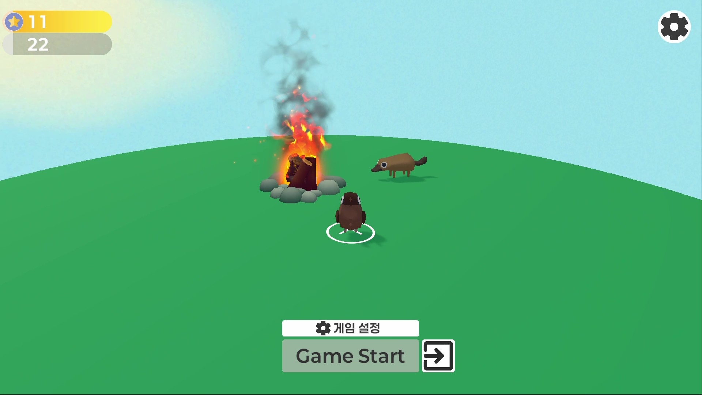
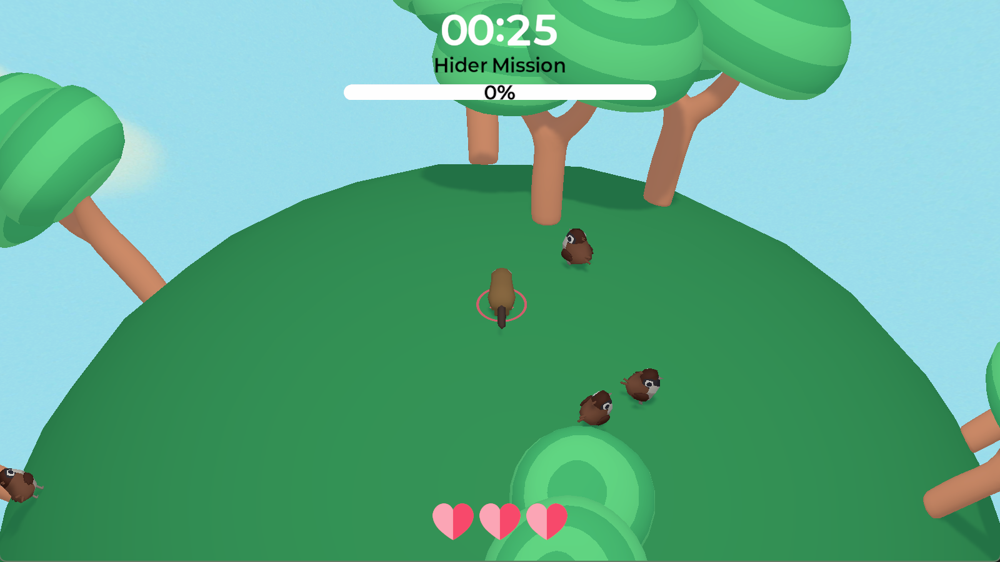
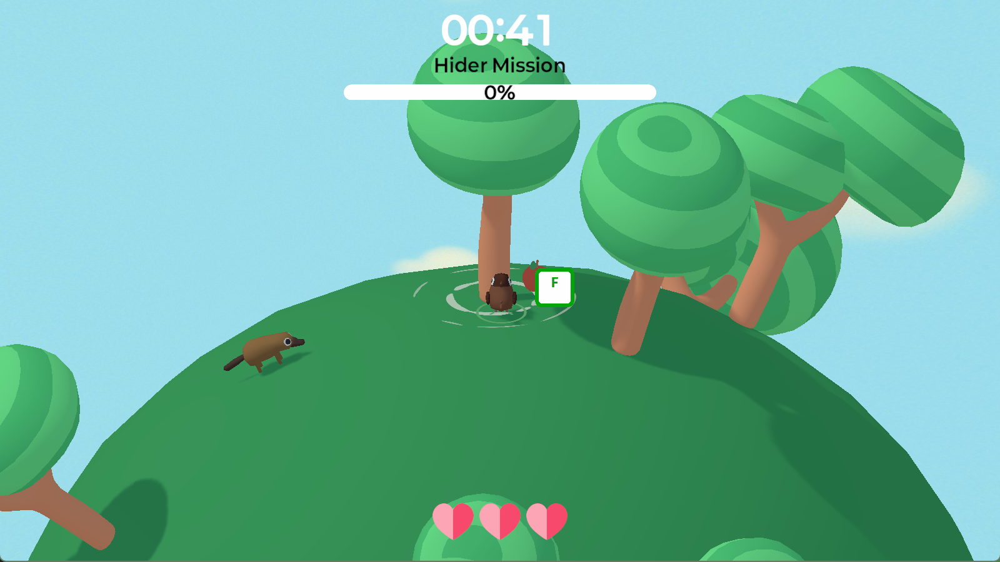


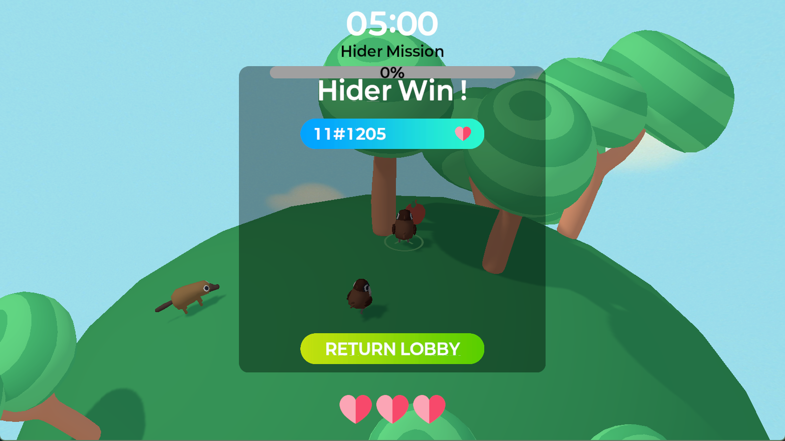
| 기간 | 이름 | 내용 |
|---|---|---|
| 2024.05.22 ~ 2025.03.01 | 비엔에프테크놀로지(주) | 원자력 발전소 모니터링 및 조작 SW 개발 |
| 2025.06.31 ~ 2025.08.20 | 아이와즈 인턴 | AI 활용 엣지 디바이스 얼굴 인식 프로젝트 |
개발 기간: 2023.06 ~ 2023.11 (6개월)
인원: 6명
역할: 팀장
유니티의 강화학습 라이브러리 ML-Agents를 활용하여 자율주행 시스템을 제작했습니다.
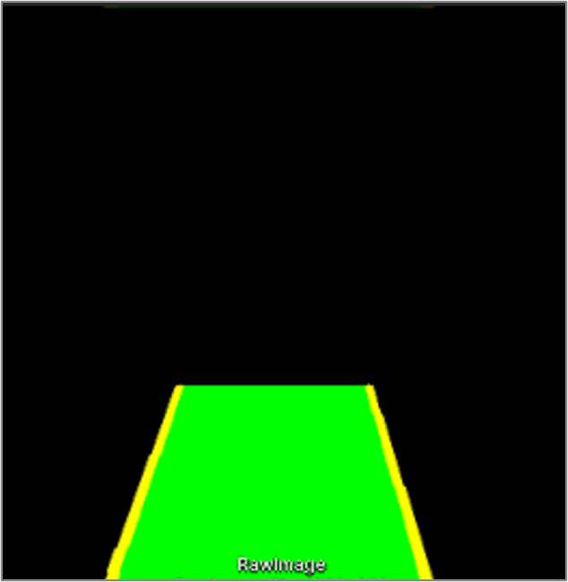 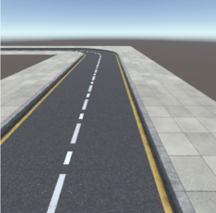
Opencvsharp 라이브러리를 통해 가상환경 차선을 인식한 이미지를 텍스처로 학습에 활용했습니다.
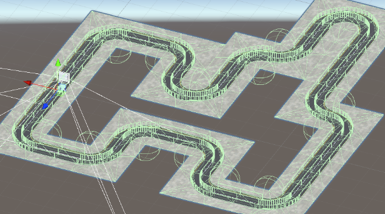
실시간 카메라 센서 데이터를 이용해 차선을 벗어나면 EndEpisode() 호출로 패널티 부여.
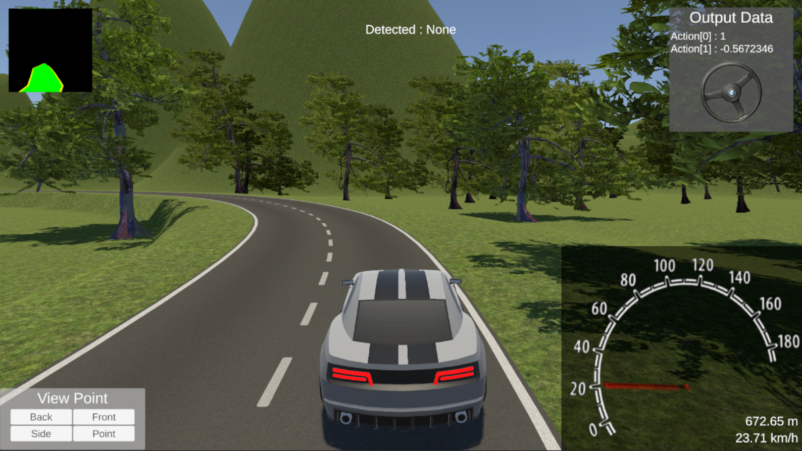
Agent가 기본 주행을 수행했으나 복귀 학습이 부족하여 퀄리티가 낮은 결과를 얻었습니다.
기간: 2025.03 ~ 2025.11 예정
인원: 2명
역할: 팀장
GitHub: The Zoo Repository
AI NPC 사이에서 진짜 플레이어를 찾아내는 소셜 디덕션 멀티플레이 게임입니다.
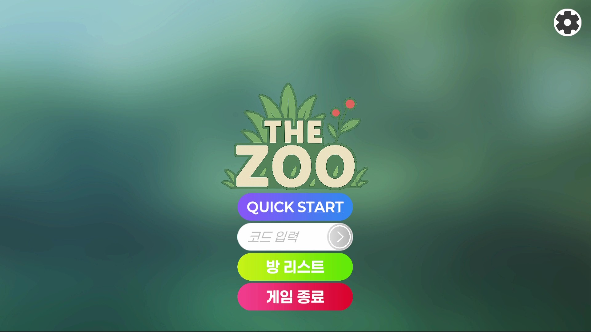
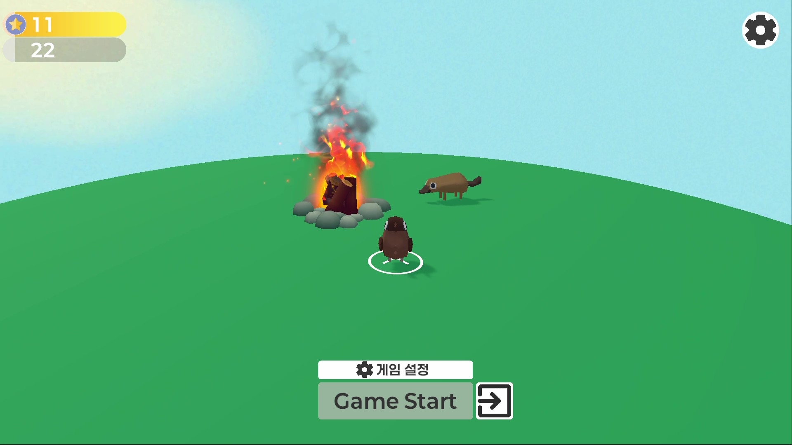
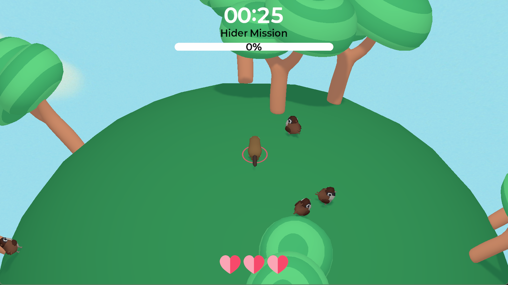
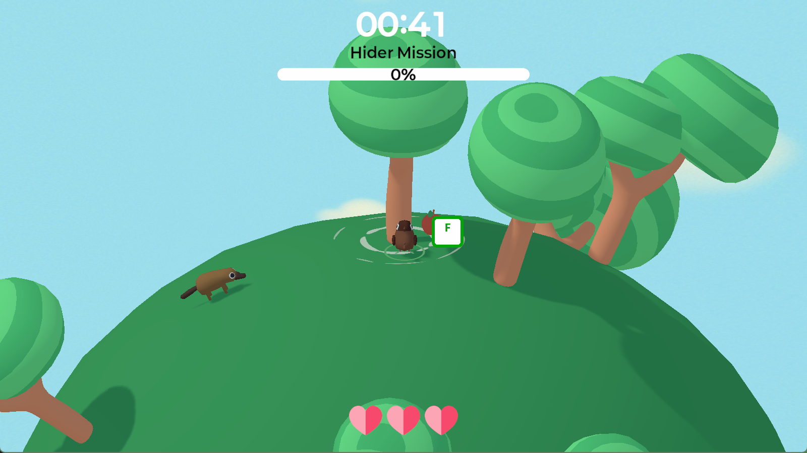
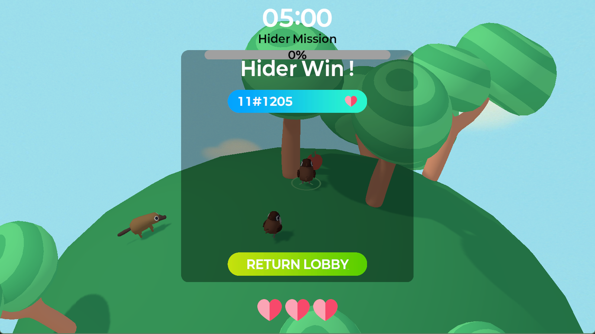
기간: 2025.07.11 ~ 2025.07.13
인원: 4명
역할: 기획 및 개발
‘빵’을 주제로 한 InD 게임잼 참가작으로, 던져서 만드는 빵 배달 게임입니다.
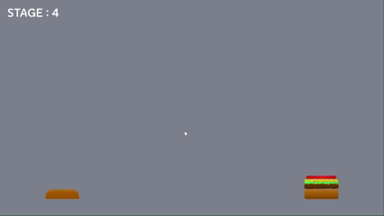
기간: 2025.09.05 ~ 2025.09.07
역할: 개발
“종말”을 주제로 한 퍼즐 액션 게임. 파쿠르, 로프, 사다리 등 다양한 액션 구현.
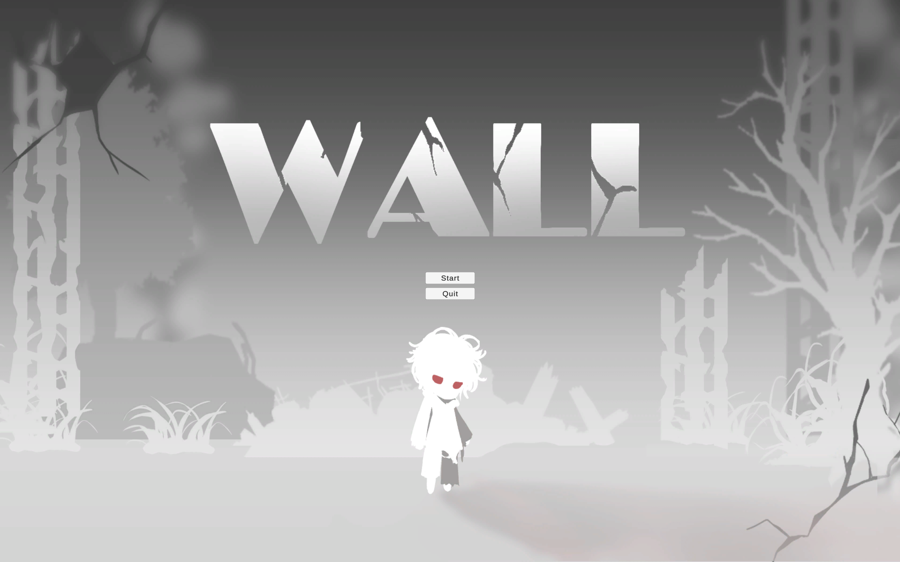
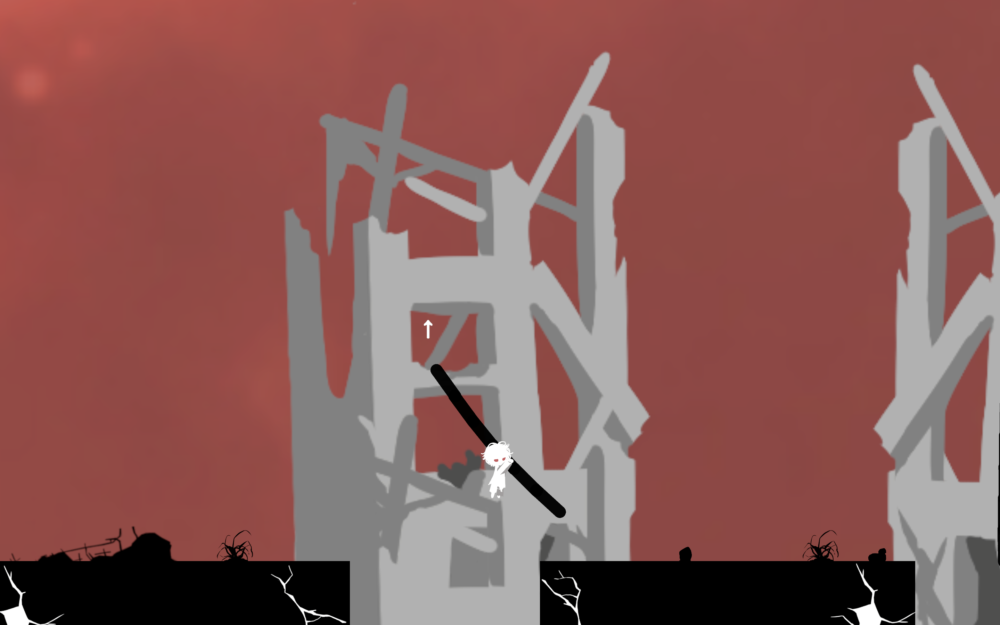
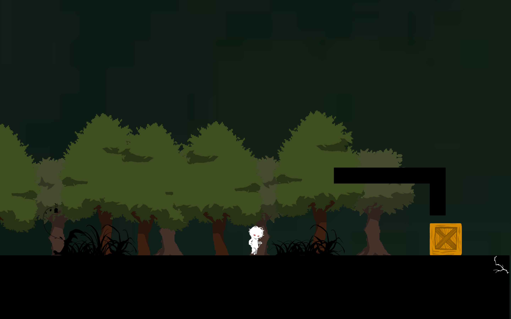
기간: 2025.02.16 ~ 2025.03.02
GitHub: UCSI_Subject_Team1
UCSI 대학의 강의실 중복 문제를 AI로 해결하는 Django 기반 프로젝트.
기간: 2024.10.07 ~ 2024.11.10
GitHub: Hanbat-Box Repository
AWS S3 기반의 교내 파일 공유 서비스. Spring Boot와 S3 통합으로 대용량 파일 처리 최적화.
기간: 2025.03 ~ 2025.07
GitHub: 리딩브릿지 Repository
생성형 AI를 활용해 난독증 아동을 위한 교재를 자동 생성하는 서비스.
© 2025 김만종 Portfolio